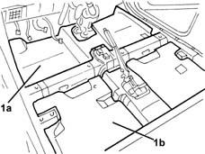

7040L12 passenger compartment floor soundproofing - r r with floor carpet removed
- Path
- Procedures > 70 FITTINGS > 7040 BODYSHELL INTERIOR TRIMS AND FITTINGS > 7040L cabin floor covering > 7040L12 passenger compartment floor soundproofing - r r with floor carpet removed
- Kind
- repair procedure (removal / refitting; the operation number is the code)
- Applies to
- all engines; all production periods
- Interactive page
- https://sloeber94.github.io/elrnDB-lYpsln/en/#/2429600
Applies to: all engines; all production periods
 Removing
Removing
 Refitting
Refitting1. Remove the front sound insulation (1a) and the rear sound insulation (1b).

Applies to: all engines; all production periods
Refitting
RemovingCheck that the soundproofing is undamaged.
Position the sound insulation.